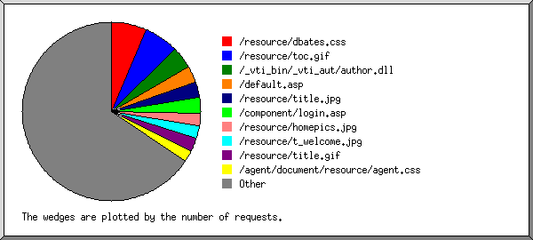

Web Server Statistics for es57045 Web Server Statistics for es57045
Web Server Statistics for es57045 Web Server Statistics for es57045(Go To: Top: General Summary: Monthly Report: Daily Summary: Hourly Summary: Failed Referrer Report: Search Word Report: Browser Report: Browser Summary: Operating System Report: Status Code Report: File Size Report: Redirection Report: Request Report)
This report contains overall statistics.
(Figures in parentheses refer to the 7-day period ending May 31
2004 at 11:59 PM).
Successful requests: 7,132 (3,194)
Average successful requests per day: 232 (456)
Logfile lines without status code: 93 (0)
Successful requests for pages: 9 (9)
Failed requests: 187 (65)
Redirected requests: 1,434 (566)
Distinct files requested: 228 (180)
Distinct hosts served: 362 (98)
Corrupt logfile lines: 1
Unwanted logfile entries: 12
Data transferred: 42.406 Mbytes (14.965 Mbytes)
Average data transferred per day: 1.384 Mbytes (2.137 Mbytes)
(Go To: Top: General Summary: Monthly Report: Daily Summary: Hourly Summary: Failed Referrer Report: Search Word Report: Browser Report: Browser Summary: Operating System Report: Status Code Report: File Size Report: Redirection Report: Request Report)
This report lists the activity in each month.
Each unit ( ) represents 1 request
for a page.
) represents 1 request
for a page.
month: #reqs: #pages: --------: -----: ------: May 2004: 7132: 9:Busiest month: May 2004 (9 requests for pages).
(Go To: Top: General Summary: Monthly Report: Daily Summary: Hourly Summary: Failed Referrer Report: Search Word Report: Browser Report: Browser Summary: Operating System Report: Status Code Report: File Size Report: Redirection Report: Request Report)
This report lists the total activity for each day of the week, summed over all the weeks in the report.
Each unit () represents 1 request
for a page.
day: #reqs: #pages: ---: -----: ------: Sun: 70: 0: Mon: 817: 0: Tue: 1831: 5:Thu: 1500: 0: Fri: 396: 0: Sat: 189: 0:
(Go To: Top: General Summary: Monthly Report: Daily Summary: Hourly Summary: Failed Referrer Report: Search Word Report: Browser Report: Browser Summary: Operating System Report: Status Code Report: File Size Report: Redirection Report: Request Report)
This report lists the total activity for each hour of the day, summed over all the days in the report.
Each unit () represents 1 request
for a page.
hour: #reqs: #pages: ----: -----: ------: 0: 176: 0: 1: 81: 0: 2: 9: 0: 3: 139: 0: 4: 71: 0: 5: 46: 0: 6: 39: 0: 7: 80: 0: 8: 21: 0: 9: 20: 0: 10: 47: 0: 11: 15: 0: 12: 66: 0: 13: 273: 2:14: 536: 0: 15: 604: 2:
(Go To: Top: General Summary: Monthly Report: Daily Summary: Hourly Summary: Failed Referrer Report: Search Word Report: Browser Report: Browser Summary: Operating System Report: Status Code Report: File Size Report: Redirection Report: Request Report)
This report lists the referrers containing broken links to the site.
Listing referring URLs, sorted by the number of failed requests.
#reqs: URL
-----: ---
10: http://www.whois.sc/
8: http://www.dbates.com/signin.asp
3: https://www.dbates.com/agent/EditClient.asp
3: http://www.chubb.com/cgi-bin/agentlookup/ziplookupmore_v2.cgi
1: https://www.dbates.com/agent/ViewClient.asp
1: https://www.dbates.com/agent/suggest.asp
1: https://www.dbates.com/agent/FormManager.asp
1: https://www.dbates.com/agent/cpmain.asp
(Go To: Top: General Summary: Monthly Report: Daily Summary: Hourly Summary: Failed Referrer Report: Search Word Report: Browser Report: Browser Summary: Operating System Report: Status Code Report: File Size Report: Redirection Report: Request Report)
This report lists which words people used in search engines to find the site.
Listing query words, sorted by the number of requests.
#reqs: search term
-----: -----------
12: bates
12: durham
10: and
4: hilsboro
4: oregon
3: model
3: &
2: ship
2: napoleonic
1: insurance
1: the
1: athletic
1: rock
1: astoria
1: stern
1: agencies
1: agency
1: wheelers
1: dbates
1: club
(Go To: Top: General Summary: Monthly Report: Daily Summary: Hourly Summary: Failed Referrer Report: Search Word Report: Browser Report: Browser Summary: Operating System Report: Status Code Report: File Size Report: Redirection Report: Request Report)
This report lists the browsers used by visitors.
Listing the top 40 browsers by the number of requests, sorted by the number of requests.
#reqs: browser
-----: -------
1772: Mozilla/4.0 (compatible; MSIE 6.0; Windows NT 5.1; .NET CLR 1.0.3705; .NET CLR 1.1.4322)
1733: Mozilla/4.0 (compatible; MSIE 6.0; Windows NT 5.0)
688: Mozilla/4.0 (compatible; MSIE 6.0; Windows NT 5.1)
416: Mozilla/4.0 (compatible; MSIE 6.0; Windows NT 5.1; .NET CLR 1.1.4322)
284: MSFrontPage/4.0
283: Mozilla/4.0 (compatible; MSIE 6.0; Windows NT 5.0; .NET CLR 1.1.4322)
217: Mozilla/4.0 (compatible; MSIE 6.0; Windows NT 5.1; .NET CLR 1.0.3705)
139: Mozilla/3.01 (compatible;)
124: Mozilla/4.0 (compatible; MSIE 6.0; Windows 98; .NET CLR 1.1.4322)
98: Mozilla/4.0 (compatible; MSIE 6.0; Windows 98; Win 9x 4.90; (R1 1.5); MSN 9.0; MSNbVZ02; MSNmen-us; MSNcOTH; MPLUS)
96: MSProxy/2.0
93: Mozilla/4.0 (compatible; grub-client-1.5.3; Crawl your own stuff with http://grub.org)
87: LinkWalker
62: Mozilla/5.0 (compatible; Yahoo! Slurp; http://help.yahoo.com/help/us/ysearch/slurp)
61: Mozilla/5.0 (Windows; U; Windows NT 5.0; en-US; rv:1.4) Gecko/20030624 Netscape/7.1 (ax)
58: Mozilla/4.0 (compatible; MSIE 6.0; Windows 98)
55: Mozilla/4.0 (compatible; MSIE 6.0; Windows 98; H010818; YComp 5.0.0.0)
55: Mozilla/4.0 (compatible; MSIE 6.0; Windows NT 5.1; COE June 03, 2002; .NET CLR 1.0.3705)
45: Mozilla/4.0 (compatible; MSIE 6.0; Windows NT 4.0; BOTW)
40: Mozilla/4.0 (compatible; MSIE 5.5; Windows NT 4.0; Fireman's Fund Insurance Company; T312461)
39: Mozilla/4.0 (compatible; MSIE 6.0; AOL 9.0; Windows NT 5.1)
39: Mozilla/4.0 (compatible; MSIE 6.0; Windows NT 5.2; .NET CLR 1.0.3705; .NET CLR 1.1.4322)
38: Googlebot/2.1 ( http://www.googlebot.com/bot.html)
38: Mozilla/5.0 (Windows; U; Windows NT 5.1; en-US; rv:1.6) Gecko/20040206 Firefox/0.8
36: Mozilla/4.0 (compatible; MSIE 6.0; Windows NT 5.0; Q312461)
36: Mozilla/5.0 (Macintosh; U; PPC Mac OS X; en) AppleWebKit/124 (KHTML, like Gecko) Safari/125.1
32: Mozilla/4.0 (compatible; MSIE 5.01; Windows NT 5.0)
29: Mozilla/4.0 (compatible; MSIE 6.0; Windows NT 5.0; DigExt)
29: Mozilla/4.0 (compatible; MSIE 6.0; Windows NT 5.0; .NET CLR 1.0.3705; .NET CLR 1.1.4322)
27: Mozilla/4.0 (compatible; MSIE 6.0; Windows 98; MSN 8.0; MSN 8.5; MSNbVZ02; MSNmen-us; MSNcOTH)
26: Mozilla/4.0 (compatible; MSIE 5.5; Windows 98; Win 9x 4.90)
25: Mozilla/4.0 (compatible; MSIE 6.0; Windows NT 5.1; {29FC530C-E848-4DD8-A1FD-0EDF62976E0D})
25: Mozilla/4.0 (compatible; MSIE 6.0; Windows NT 5.1; FunWebProducts; .NET CLR 1.1.4322)
22: Mozilla/4.0 (compatible; MSIE 6.0; Windows 98; (R1 1.5))
17: Mozilla/4.0 (compatible; MSIE 6.0; Windows NT 5.1; FunWebProducts)
16: Mozilla/2.0 (compatible; Ask Jeeves/Teoma)
16: Mozilla/4.0 (compatible; MSIE 6.0; AOL 9.0; Windows 98)
12: Mozilla/4.0 (compatible; MSIE 6.0; Windows NT 5.1; AT&T CSM7.0)
12: Mozilla/4.0 (compatible; MSIE 6.0; Windows NT 5.2; .NET CLR 1.1.4322)
12: Mozilla/4.0 (compatible; MSIE 6.0; Windows NT 5.0; isp 1706; .NET CLR 1.0.3705)
198: [not listed: 39 browsers]
(Go To: Top: General Summary: Monthly Report: Daily Summary: Hourly Summary: Failed Referrer Report: Search Word Report: Browser Report: Browser Summary: Operating System Report: Status Code Report: File Size Report: Redirection Report: Request Report)
This report lists the vendors of visitors' browsers.
Listing browsers, sorted by the number of requests.
#reqs: browser
-----: -------
6109: MSIE
5948: MSIE/6
159: MSIE/5
2: MSIE/4
350: Netscape (compatible)
284: MSFrontPage
284: MSFrontPage/4
141: Netscape
105: Mozilla/1
96: MSProxy
96: MSProxy/2
87: LinkWalker
38: Googlebot
38: Googlebot/2
6: msnbot
6: msnbot/0
4: MFC_Tear_Sample
4: NPBot (http:
4: NPBot (http://www
4: Microsoft Data Access Internet Publishing Provider Cache Manager
2: Xenu Link Sleuth 1.2e
1: TurnitinBot
1: TurnitinBot/2
1: Microsoft-WebDAV-MiniRedir
1: Microsoft-WebDAV-MiniRedir/5
1: Netscape
1: Netscape/4
1: http:
1: http://www
1: ia_archiver
(Go To: Top: General Summary: Monthly Report: Daily Summary: Hourly Summary: Failed Referrer Report: Search Word Report: Browser Report: Browser Summary: Operating System Report: Status Code Report: File Size Report: Redirection Report: Request Report)
This report lists the operating systems used by visitors.
Listing operating systems, sorted by the number of requests for pages.
#: #reqs: #pages: OS --: -----: ------: -- 1: 840: 9: OS unknown 2: 40: 0: Robots 3: 42: 0: Macintosh : 42: 0: Macintosh PowerPC 4: 6208: 0: Windows : 1: 0: Windows 95 : 150: 0: Unknown Windows : 3299: 0: Windows XP : 2: 0: Windows CE : 340: 0: Windows 98 : 2188: 0: Windows 2000 : 130: 0: Windows ME : 98: 0: Windows NT
(Go To: Top: General Summary: Monthly Report: Daily Summary: Hourly Summary: Failed Referrer Report: Search Word Report: Browser Report: Browser Summary: Operating System Report: Status Code Report: File Size Report: Redirection Report: Request Report)
This report lists the HTTP status codes of all requests.
Listing status codes, sorted numerically.
#reqs: status code
-----: -----------
5343: 200 OK
5: 206 Partial content
1434: 302 Document found elsewhere
1784: 304 Not modified since last retrieval
1: 401 Authentication required
168: 404 Document not found
18: 500 Internal server error
(Go To: Top: General Summary: Monthly Report: Daily Summary: Hourly Summary: Failed Referrer Report: Search Word Report: Browser Report: Browser Summary: Operating System Report: Status Code Report: File Size Report: Redirection Report: Request Report)
This report lists the sizes of files.

size: #reqs: %bytes:
-----------: -----: ------:
0: 1228: :
1b- 10b: 0: :
11b- 100b: 0: :
101b- 1kb: 2286: 1.45%:
1kb- 10kb: 2539: 14.52%:
10kb-100kb: 1067: 76.98%:
100kb- 1Mb: 12: 7.05%:
(Go To: Top: General Summary: Monthly Report: Daily Summary: Hourly Summary: Failed Referrer Report: Search Word Report: Browser Report: Browser Summary: Operating System Report: Status Code Report: File Size Report: Redirection Report: Request Report)
This report lists the files that caused requests to be redirected to another file. (Usually directories with the final slash missing, or CGI scripts that forced redirections.)
Listing the top 30 files by the number of redirected requests, sorted by the number of redirected requests.
#reqs: file
-----: ----
434: /component/login.asp
372: /default.asp
116: /client/default.asp
98: /client/
67: /services/
67: /about/
41: /editform.asp
40: /agent/default.asp
27: /viewdocument.asp
16: /viewdocument.asp?ID=QEBPEDBU
11: /viewdocument.asp?ID=TBBLGBSX
16: /privacy.asp
16: /contact.asp
15: /focus/mvrreg/mvrreg0.asp
14: /about/news.asp
14: /loadform.asp
13: /agent/
12: /focus/mvrreg/default.asp
12: /agent/retrieveform.asp
10: /focus/euse/euse1.asp
8: /customer.asp
7: /agent/viewform.asp
6: /risk101.asp
4: /events.asp
4: /forms.asp
4: /client/loadprintform.asp
3: /focus/mvrreg/
3: /sitemap.asp
2: /focus/euse/
2: /links.asp
2: /focus/euse/default.asp
2: /viewform.asp
3: [not listed: 3 files]
(Go To: Top: General Summary: Monthly Report: Daily Summary: Hourly Summary: Failed Referrer Report: Search Word Report: Browser Report: Browser Summary: Operating System Report: Status Code Report: File Size Report: Redirection Report: Request Report)
This report lists the files on the site.

Listing files with at least 20 requests, sorted by the number of requests.
#reqs: %bytes: last time: file -----: ------: ------------------: ---- 460: 1.08%: May/31/04 10:23 PM: /resource/dbates.css 452: 8.06%: May/31/04 10:23 PM: /resource/toc.gif 280: 1.46%: May/26/04 4:39 PM: /_vti_bin/_vti_aut/author.dll 219: : May/31/04 11:24 AM: /default.asp 200: 6.70%: May/31/04 7:20 AM: /resource/title.jpg 199: 0.12%: May/31/04 1:24 PM: /component/login.asp 165: 9.27%: May/31/04 7:19 AM: /resource/homepics.jpg 165: 0.52%: May/31/04 7:19 AM: /resource/t_welcome.jpg 165: 1.18%: May/31/04 7:19 AM: /resource/title.gif 150: 0.23%: May/27/04 4:07 PM: /agent/document/resource/agent.css 148: 12.78%: May/29/04 12:32 AM: /resource/about.jpg 126: 0.20%: May/31/04 10:23 PM: /resource/spacer.gif 121: 0.17%: May/27/04 4:06 PM: /component/forms/form.css 121: 0.11%: May/27/04 4:06 PM: /resource/spacerline.gif 121: 0.17%: May/27/04 4:06 PM: /component/forms/validation.js 119: 0.18%: May/31/04 10:23 PM: /resource/x_master.jpg 118: 0.29%: May/31/04 10:23 PM: /resource/t_about.jpg 84: : May/31/04 7:19 AM: /contact.asp 81: 11.98%: May/31/04 7:20 AM: /resource/contacttx.jpg 81: 2.18%: May/27/04 4:07 PM: /agent/cpmain.asp 79: : May/28/04 10:14 AM: /about/default.asp 76: 0.17%: May/27/04 8:49 PM: /signin.asp 71: : May/29/04 6:04 PM: /services/default.asp 69: 0.21%: May/29/04 4:43 AM: /resource/dialc.jpg 67: 0.29%: May/27/04 8:49 PM: /client/document/resource/client.css 65: 0.12%: May/27/04 8:49 PM: /client/resource/serviceteam.gif 65: 0.14%: May/27/04 8:49 PM: /client/resource/dbhome.gif 65: 0.21%: May/27/04 8:49 PM: /client/resource/title.gif 65: 0.05%: May/27/04 8:49 PM: /client/resource/divider.gif 64: 0.20%: May/29/04 12:27 AM: /resource/linetab.gif 64: 0.22%: May/29/04 12:27 AM: /resource/logon.gif 63: 0.11%: May/27/04 8:49 PM: /client/document/resource/dotdoc.gif 63: 0.07%: May/27/04 8:49 PM: /client/resource/forms.gif 63: 0.25%: May/28/04 9:54 PM: /agent/signin.asp 63: 0.60%: May/27/04 3:14 PM: /editform.asp 61: 0.16%: May/29/04 4:43 AM: /resource/dialp.jpg 57: 0.15%: May/29/04 4:43 AM: /resource/dialn.jpg 56: 0.35%: May/27/04 8:49 PM: /client/select.asp 55: 1.30%: May/29/04 12:32 AM: /resource/abouttx.jpg 53: 0.13%: May/27/04 8:49 PM: /client/selectaccounts/logo.gif 53: 0.05%: May/27/04 8:49 PM: /client/resource/leftlinks.gif 52: 7.24%: May/29/04 4:43 AM: /resource/services.gif 50: 3.66%: May/31/04 7:20 AM: /directry.asp 44: 0.10%: May/26/04 3:17 PM: /agent/document/resource/validation.js 44: 0.20%: May/31/04 7:20 AM: /resource/t_contact.jpg 44: 0.40%: May/27/04 3:13 PM: /loadform.asp 30: 0.27%: May/26/04 3:02 PM: /loadform.asp?ID=278-809-920-3 11: 0.10%: May/27/04 3:13 PM: /loadform.asp?ID=7666-264-925-10 43: 0.08%: May/27/04 2:59 PM: /agent/default.asp 39: 0.08%: May/29/04 12:32 AM: /resource/dotdoc.jpg 39: 0.20%: May/29/04 12:32 AM: /resource/t_resource.jpg 38: 0.82%: May/26/04 2:08 PM: /agent/editclient.asp 14: 0.62%: May/26/04 2:08 PM: /agent/editclient.asp?ID=CLIENT1 38: : May/26/04 11:41 PM: /customer.asp 38: 0.11%: May/27/04 2:59 PM: /agent/cptoc.asp 37: 0.40%: May/27/04 2:59 PM: /agent/document/resource/tabpublic.jpg 37: 0.31%: May/27/04 2:59 PM: /agent/document/resource/tabhelp.jpg 37: 0.36%: May/27/04 2:59 PM: /agent/document/resource/tabidea.jpg 37: 0.41%: May/27/04 2:59 PM: /agent/document/resource/tabcontrol.jpg 34: 0.07%: May/26/04 11:38 PM: /resource/t_marine.jpg 34: : May/31/04 10:23 PM: /about/ships.asp 34: 1.59%: May/26/04 11:38 PM: /resource/marine.jpg 33: : May/30/04 4:45 PM: /services/prof0.asp 31: 0.05%: May/27/04 3:14 PM: /storeform.asp 31: 0.05%: May/27/04 3:14 PM: /storeform.asp?SubmissionStatus=1 31: 0.14%: May/29/04 12:32 AM: /resource/t_events.jpg 29: : May/31/04 1:35 PM: /about/begin.asp 29: 0.09%: May/29/04 12:27 AM: /resource/t_risk101.gif 28: : May/29/04 4:44 AM: /sitemap.asp 28: : May/26/04 11:39 PM: /risk101.asp 27: : May/28/04 3:06 PM: /services/marine_c.asp 26: 0.15%: May/28/04 10:14 AM: /resource/special.jpg 26: : May/26/04 11:39 PM: /events.asp 25: : May/29/04 10:20 PM: /services/clines0.asp 25: 0.18%: May/29/04 4:43 AM: /resource/t_clines.jpg 25: 2.92%: May/29/04 4:43 AM: /resource/clines.jpg 24: : May/26/04 11:38 PM: /services/marine0.asp 24: 0.09%: May/29/04 4:44 AM: /resource/t_sitemap.jpg 23: 0.14%: May/25/04 7:36 PM: /agent/editassociate.asp 23: 0.17%: May/27/04 3:11 PM: /privacy.asp 17: 0.17%: May/27/04 3:11 PM: /privacy.asp?confirm=1 22: : May/30/04 1:11 AM: /services/marine_x.asp 22: 0.15%: May/31/04 10:23 PM: /resource/modelship.jpg 21: : May/29/04 4:44 AM: /links.asp 21: 0.58%: May/24/04 11:53 PM: /agent/viewassociate.asp 20: 1.97%: May/28/04 10:13 AM: /resource/prof.jpg 20: : May/30/04 9:41 PM: /about/industry.asp 20: 0.09%: May/28/04 10:13 AM: /resource/t_prof.jpg 898: 15.79%: May/31/04 1:09 AM: [not listed: 106 files]
(Go To: Top: General Summary: Monthly Report: Daily Summary: Hourly Summary: Failed Referrer Report: Search Word Report: Browser Report: Browser Summary: Operating System Report: Status Code Report: File Size Report: Redirection Report: Request Report)